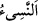

14. Süleyman’ın ölümüne hükmettiğimiz zaman, onun öldüğünü, ancak değneğini
yiyen bir ağaç kurdu gösterdi. (Sonunda yere) yıkılınca anlaşıldı ki cinler gaybı
bilselerdi, o küçük düşürücü azap içinde kalmazlardı.
“Süleyman’ın ölümüne hükmettiğimiz” ölümle onu dünyadan ayırdığımız “zaman,
onun öldüğünü,” cinlere “ancak” üzerine dayandığı “değneğini yiyen bir ağaç kurdu
gösterdi.”
“ hüküm verme ve ayırmadır. Ölüm, duyu gücünün (kuvve-i hassâse) yok
olmasıdır. “ ağaç kurdudur. Bu kelime, yemek demek olan kendi fiili “a
izafe edilmiştir. Bu sebeple semânın mukabili olan “ Âdemoğullarının cesetlerini
yediği için ona bu isim verilmiştir. “ kelimesi, vakti ertelemek demek olan “dendir. Çünkü değnek ile de bir şeyi ertelenir, çekilir ve kovulur.
Sonunda Süleyman (a.s.) ölü olarak yere “yıkılınca” kesin olarak “anlaşıldı ki
cinler” iddia ettikleri “gaybı” his ve duyularından gaib olan şeyi “bilselerdi, o küçük
düşürücü azap içinde” yapmakta oldukları zor ve zahmetli işlerde “kalmazlardı.”
Râğıb der ki: “” yıkılma sesi duyulacak şekilde düştü demektir. “ su, rüzgar
ve diğer yüksekten düşen şeyin çıkardığı sestir.”
Bir şey sana karışık geldikten sonra onu bilirsen “ denir. Buna göre mânâ,
denir. Buna göre mânâ,
yâni cinler durum kendilerine karışıp belirsizlik arzettikten sonra hiçbir şek ve şüpheye
mahal olmayacak şekilde kesin bilgiyle bildiler demek olur. “ kelimesinin, bir şey
açık ve âşikar olduğunda söylenen “ mânâsına alınması da mümkündür. Bu
durumda mânâ şöyledir: İnsanlara âşikar oldu ki cinler gaybı bilselerdi…
Hâsılı eğer cinler iddia ettikleri gibi gaybı bilselerdi elbette Süleyman (a.s.)’ın
ölümünü de bilirlerdi. Süleyman (a.s.)’ın ölümünden sonra yere düşünceye kadar bir
sene onun emrinde çalışmazlardı. Olan olunca kendilerinin bilenler değil câhiller
olduklarını bildiler.
Kıssanın aslı şöyledir: Süleyman (a.s.)’ın eceli yaklaşınca bunun ilk alameti olarak
her sabah mihrabında biten bir ağaç görüyordu. Nitekim Mesnevi’de der ki:
Süleyman alçakgönüllü bir şekilde
Her sabah Mescid-i Aksâ’ya geldiğinde,
Mescidde yeni bitmiş bir ot görerek ona,
Söyle, derdi, adın ve yararın nedir?